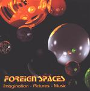

| Artist: | Foreign Spaces |
| Title: | Imagination - Pictures - Music |
| Label: | ISCD 010111 |
| Length(s): | minutes |
| Year(s) of release: | 2001 |
| Month of review: | [07/2001] |
| 1) | Birth | 10.08 |
| 2) | Planets I | 3.20 |
| 3) | Planets II | 2.26 |
| 4) | Planets III | 3.09 |
| 5) | Outer Worlds | 3.51 |
| 6) | First Impressions Of A Human Being | 5.04 |
| 7) | Memories | 5.16 |
| 8) | In Your Head | 4.02 |
| 9) | Crystal Water | 3.08 |
| 10) | Greiselgram (an Experiment) | 4.44 |
Cosmic stuff on the three parted Planets. Lots of zissers and stereo effects on this track that reminds me most of eighties Tangerine Dream. A small hick-up in the first part. The secon part is meditative and reminds me of Kitaro at his most abstract. Actually the music has trouble getting going here. Lots of sound, but little really happening. Kind of the impression that sitar music generally makes on me: none to speak of. The final part is cosmic and more up-tempo. The music is a bit wavery at times though.
Outer Worlds is a very nice track. The music is sensitive, subtle and has the same emotional content as a good Vangelis track. This track could also have been called Bright New Day, because that is the impression I get. There is a note of sadness later in the track though. Not overly present, but I feel something there.
First Impressions Of A Human Being opens with a Kitaro like atmospheres. Then this is combined with an atmosphere of Shine On You Crazy Diamond followed by a baby crying. If you just have had children (I am not saying that this is the case for me), I can imagine you do not want to hear this. However, later the child laughs.
One of the best tracks on the album is Memories with sad and subtle melodies on piano and later on an acoustic guitar with a bit more melody, but the same subtleness. In prog we would get a bombastic ending, but not here.
Lots of percussion on In Your Head. I don't like this track. It dribbles on and on with lots of high in the sound and at the end some Steve Hillman like guitar solo.
Twinkly clear is Crystal Water, but again mostly sounds, little structure. I guess most of the music on this album is on the meditative side (most not all) and is more meant to fill up the silence with sound than anything else.
The final track Greiselgram is a nice one with some nice melodies (one which I reminds me of a another song, but I can't recall the title).